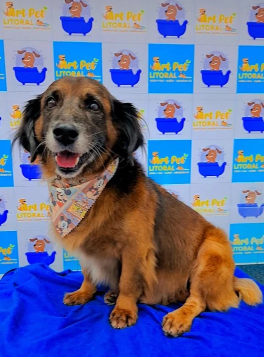
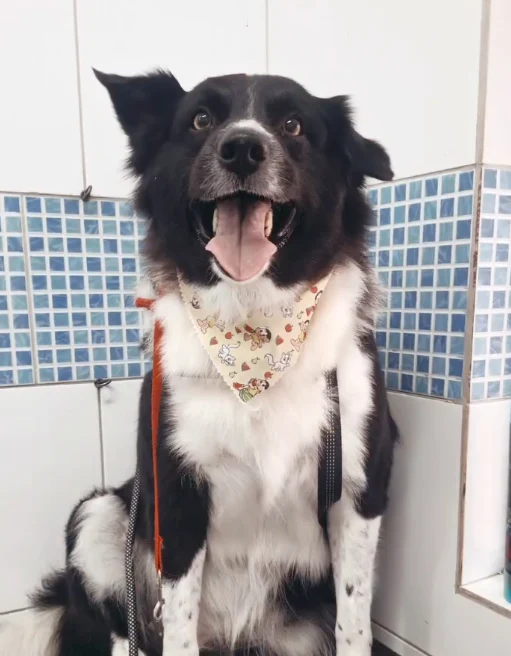
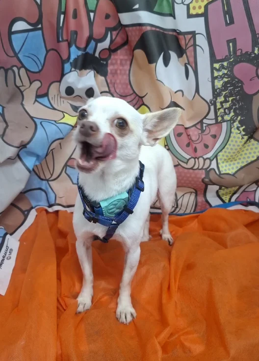
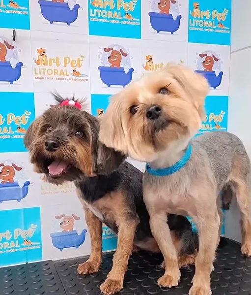
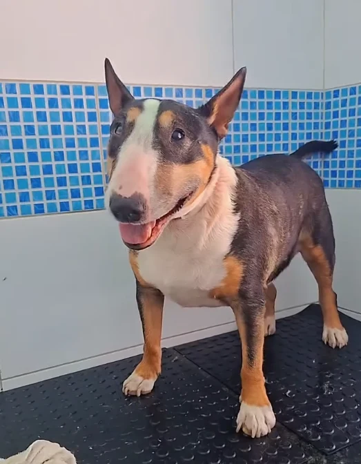
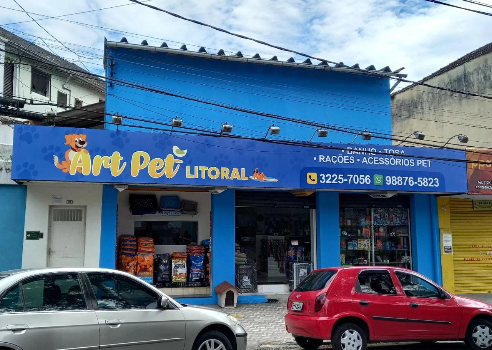

Banho e tosa
Higiene, conforto e um visual caprichado para o seu melhor amigo.
Quero saber mais ↗Banho, tosa e tudo o que seu melhor amigo precisa. Aqui, cada patinha recebe atenção, cuidado e muito carinho.





A gente sabe: seu pet é parte da sua vida. Por isso, na Art Pet Litoral, carinho e dedicação acompanham cada banho, cada tosa e cada atendimento.
Em Santos, reunimos cuidados para cães e gatos, hospedagem e uma loja com rações e acessórios para o dia a dia. Tudo com aquele atendimento próximo que faz você se sentir em casa.
Para voltar para casa limpinho, cheiroso e pronto para receber ainda mais abraços.
Higiene, conforto e um visual caprichado para o seu melhor amigo.
Quero saber mais ↗Carinho e atenção às particularidades do seu companheiro felino.
Quero saber mais ↗Um acabamento cuidadoso, pensado para a pelagem do seu pet.
Quero saber mais ↗Consulte a equipe sobre o banho indicado pelo veterinário do seu pet.
Quero saber mais ↗Um pequeno cuidado que faz parte da rotina de bem-estar.
Quero saber mais ↗Vai viajar? Converse com a gente sobre a estadia do seu companheiro.
Quero saber mais ↗Cada pet tem seu jeitinho. Vamos encontrar o melhor cuidado para o seu? ↗
Da hora da comidinha ao passeio, encontre rações e acessórios para acompanhar cada momento do seu pet.
GRANDES MARCAS, PERTINHO DE VOCÊ
“Excelente loja, com grande variedade de produtos para pets.”
“Ótimo atendimento e cuidado com os pets, meu cachorro ficou bem limpinho e cheiroso.”
Venha conhecer a loja e traga seu melhor amigo. Vamos adorar receber vocês.

Vai passar por aqui? Confirme nossos horários e a disponibilidade dos serviços pelo WhatsApp.
Traçar rota no Maps (13) 3225-7056